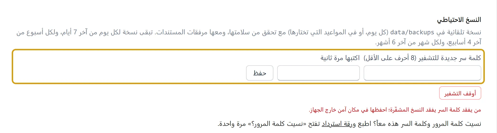
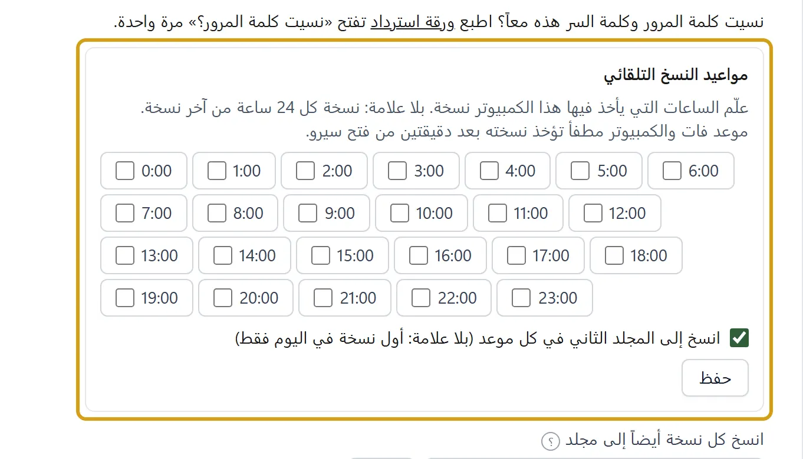
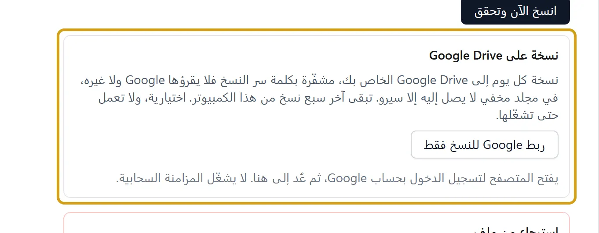
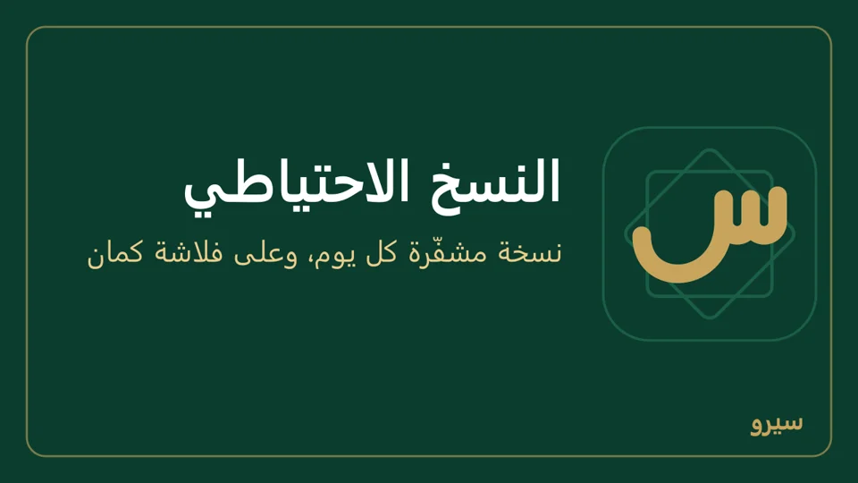

النسخ الاحتياطي على الكمبيوتر
- افتح الإعدادات ← التكامل وانزل إلى النسخ الاحتياطي.
- اكتب كلمة سر للتشفير (8 أحرف على الأقل) ثم مرة ثانية في اكتبها مرة ثانية، وحفظ. احفظها عندك: من يفقدها يفقد النسخ. لتغييرها اكتب الجديدة في الخانتين نفسيهما. وما دامت المزامنة عبر Google Drive تعمل لا تتغيّر: الأجهزة الأخرى تفتح ملفاتها بهذه الكلمة. أوقف التشفير زر وحده يسألك أولاً: النسخ بعده يقرؤها كل من يأخذها، والمشفّرة قبله تبقى بكلمة السر القديمة، وبلا كلمة سر يفتح نسيت كلمة المرور؟ على هذا الكمبيوتر أي حساب لمن يجلس عليه.


- يأخذ البرنامج نسخة يومية وحده ويتحقق منها. تبقى نسخة لكل يوم من آخر 7 أيام، ولكل أسبوع من آخر 4 أسابيع، ولكل شهر من آخر 6 أشهر، فتعود إلى نصف سنة دون أن تملأ القرص. أول فحص بعد دقيقتين من فتح البرنامج، ثم كل خمس دقائق. لتختار متى: في مواعيد النسخ التلقائي علّم ساعة أو أكثر (مثل `9:00` و`18:00`) ثم حفظ، فتؤخذ نسخة بعد كل ساعة معلَّمة. بلا علامة تبقى نسخة كل 24 ساعة من آخر نسخة. موعد فات والكمبيوتر مطفأ تؤخذ نسخته مرة واحدة بعد دقيقتين من فتح سيرو. لكل كمبيوتر مواعيده. انسخ الآن وتحقق لنسخة فورية: يظهر «أُخذت النسخة الاحتياطية وتحققنا أنها تُسترجع»، أو سبب الفشل في أعلى الصفحة وفي آخر محاولة نسخ (القرص ممتلئ مثلاً، مع ما تفعله). النسخة التي تفشل لا تترك ملفاً ناقصاً ولا نسخة غير مشفّرة.


- النسخ بجانب البيانات تضيع مع القرص. في انسخ كل نسخة أيضاً إلى مجلد اكتب مجلداً على ذاكرة خارجية (فلاشة) أو قرص آخر، مثل `E:\نسخ سيرو`، واضغط حفظ: كل نسخة تُنسخ إليه أيضاً، ويبقى فيه العدد نفسه. تحته يظهر آخر نسخ إلى المجلد: تم، أو سبب الفشل (الذاكرة غير موصولة مثلاً) ومتى نجح آخر نسخ، والنسخة على الجهاز تؤخذ في الحالين. أكثر من جهاز ينسخ إلى الفلاشة نفسها؟ اسم كل نسخة هناك يبدأ برمز جهازها، وكل جهاز يرتّب نسخه وحدها. وإن كان المجلد على القرص نفسه ينبّهك البرنامج أنه لا يحمي من عطل القرص. مع المواعيد: علّم انسخ إلى المجلد الثاني في كل موعد (بلا علامة: أول نسخة في اليوم فقط) لتصل الفلاشة نسخة في كل موعد، أو اتركها لتصلها أول نسخة في اليوم فقط. انسخ الآن وتحقق تُنسخ إليه دائماً.
- نسخة على Google Drive (اختيارية، لا تعمل حتى تشغّلها): نسخة كل يوم إلى Google Drive الخاص بك، مشفّرة بكلمة سر النسخ فلا يقرؤها Google ولا غيره، في مجلد مخفي من Drive لا يصل إليه إلا سيرو. تحتاج كلمة سر النسخ (الخطوة 2). إن كان الكمبيوتر يتزامن عبر Google Drive فحسابه نفسه مربوط؛ وإلا اضغط ربط Google للنسخ فقط: يفتح المتصفح لتسجيل الدخول، ثم عُد إلى سيرو. هذا الربط للنسخ وحدها ولا يشغّل المزامنة السحابية. ثم شغّل النسخ إلى Google Drive: تُرفع أول نسخة فوراً، ثم مع أول نسخة تلقائية كل يوم والكمبيوتر متصل بالإنترنت. تبقى هناك آخر سبع نسخ من هذا الكمبيوتر، والأقدم منها تُحذف وحدها. تحت الزر آخر رفع: تم، أو سبب الفشل ومتى نجح آخر رفع؛ والرفع الذي يفشل يُعاد بعد ساعة. ارفع نسخة الآن لنسخة فورية، وأوقف النسخ إلى Google Drive لإيقافها (يبقى ما رُفع في حسابك). افصل حساب Google يظهر حين يكون الحساب للنسخ فقط. وما دامت تعمل لا تُلغى كلمة سر النسخ: تُشفَّر بها.
- للاسترجاع منها (على هذا الكمبيوتر أو على كمبيوتر جديد بعد ربط Google للنسخ فقط بالحساب نفسه): اعرض النسخ على Google Drive يعرض كل نسخة بتاريخها وحجمها ومن أي جهاز (هذا الكمبيوتر أو جهاز آخر)؛ اكتب كلمة سرها بجانبها إن كانت غير المحفوظة هنا، واضغط استعادة للتجربة، ثم كما في الاسترجاع: أفهم أن بيانات هذا الجهاز ستُستبدل بمحتوى النسخة واجعلها بيانات هذا الجهاز.


- تنزيل بجانب أي نسخة في القائمة يحفظها حيث تريد، لترسلها لنفسك أو تضعها في Drive. النسخ كلها في المجلد `%APPDATA%\Siro - سيرو\data\backups`: الصقه في شريط العنوان في مستكشف الملفات.

- كل نسخة تحمل مرفقات المستندات (صور الفواتير وملفات PDF)، فتعود مع الاسترجاع على هذا الجهاز أو على جهاز آخر أو على الجوال.
- استعادة للتجربة بجانب كل نسخة في القائمة يفتحها في مجلد جانبي ويتحقق منها، دون أن يمسّ بياناتك. الرسالة الخضراء تضع النسخة بجانب بياناتك الآن: في النسخة وعلى هذا الجهاز الآن، لكلٍّ اسم الشركة وعدد القيود وتاريخ آخر قيد، فترى أيهما أحدث. لتعود إليها فعلاً: علّم أفهم أن بيانات هذا الجهاز ستُستبدل بمحتوى النسخة ثم اضغط اجعلها بيانات هذا الجهاز.
- مكان ملف البيانات على الكمبيوتر: بيانات الشركة كلها في قاعدة بيانات SQLite، الملف `siro.db` داخل المجلد `%APPDATA%\Siro - سيرو\data` (الصقه في شريط العنوان في مستكشف الملفات)، وبجانبه ملفان `siro.db-wal` و`siro.db-shm` ومجلد النسخ `backups`. لا تنسخ هذا الملف وسيرو مفتوح ولا تنقله بيدك: لنقل البيانات إلى جهاز آخر خذ نسخة بـانسخ الآن وتحقق ثم تنزيل، واسترجعها هناك.
- قبل كل تحديث لسيرو ينسخ البرنامج ملف البيانات إلى مجلد خاص بذلك التحديث في `%APPDATA%\Siro - سيرو\data\pre-update`، ويبقى آخر 3. إن تعذّر النسخ (القرص ممتلئ مثلاً) يسألك قبل أن يبدأ: إغلاق سيرو ثم أصلح السبب وافتحه فيحاول من جديد، أو متابعة دون نسخة.
- تحديث لم يكتمل: إن ظهر في الصفحة «تحديث بيانات سيرو لهذا الإصدار لم يكتمل» فبياناتك بقيت كما كانت قبل التحديث ولم يضع منها شيء، ونسخة منها في مجلد `pre-update`. لا تحذف سيرو ولا ملف البيانات، وحدّثه حين يصل إصدار أحدث فيكمل التحديث.
- ملف بيانات تالف: يفحص سيرو ملف البيانات كله في أول تشغيل كل يوم، وبعد كل تحديث، وبعد تشغيل لم يُغلق كما يجب (انقطعت الكهرباء أو أُطفئ الكمبيوتر والبرنامج مفتوح)، وفي باقي المرات يتأكد أنه يفتح، فلا يتأخر الفتح كلما كبر الملف. إن وجده تالفاً يضعه جانباً في مجلد `corrupted-…` (لا يُحذف) ويستعيد وحده أحدث نسخة سليمة، ويقول ذلك في أعلى الصفحة. إن كانت أحدث نسخة مشفّرة ولم يستطع قراءة كلمة سرها من الملف التالف، لا يستعيد نسخة أقدم من وراء ظهرك: تقول الصفحات «ملف بيانات الشركة تالف…» مع زر استرجاع البيانات. تفتح صفحة لا تحتاج دخولاً: اختر النسخة (أو أو ملف نسخة من مكان آخر)، اكتب كلمة سر النسخ واضغط استرجع هذه النسخة. وإن ظهر أعلى الصفحة «ملف بيانات الشركة تالف» بعد نسخة فشلت، فلا تُدخل شيئاً جديداً، وأغلق سيرو وافتحه.
- ملف البيانات اختفى: إن فتح سيرو معالج إعداد شركة جديدة وفي مجلد بياناته نسخ احتياطية لمحل، يقول ذلك فوق المعالج مع رابط استرجع بياناتك: لا تُعدّ شركة جديدة قبل أن تسترجع.
- رسائل ملف البيانات: حين يرفض ملف البيانات عملية تقول الرسالة السبب وما تفعله، ولا يُحفظ من العملية شيء: «ملف بيانات الشركة للقراءة فقط…»، «ملف بيانات الشركة مقفول من برنامج آخر…» (ينتظر سيرو بضع ثوانٍ قبل أن يقولها)، «لا مساحة على القرص لحفظ البيانات…».
- تنبيه أعلى كل صفحة: يرى المالك (ومن له الإعدادات) سطراً تحذيرياً لكل مشكلة: حين تتوقف المزامنة، أو تفشل نسخة («تعذّرت النسخة الاحتياطية» مع السبب)، أو تفشل آخر تجربة استعادة، أو يمرّ يومان بلا نسخة («لا نسخة احتياطية منذ 3 يوم» مثلاً)، أو يتوقف النسخ إلى الفلاشة («النسخ إلى المجلد الثاني متوقف»)، أو يتعذّر الرفع إلى Google Drive («النسخ إلى Google Drive متوقف» مع السبب؛ بلا إنترنت ينتظر يوماً قبل أن يقولها)، أو يرجع تاريخ الكمبيوتر إلى ما قبل آخر نسخة («تاريخ الكمبيوتر أقدم من آخر نسخة احتياطية»: صحّح التاريخ والوقت في ويندوز). اضغطه فيفتح الإعداد الذي يحلّه. إن قال السبب «بجانب ملف البيانات ملف اسمه backups يمنع إنشاء مجلد النسخ الاحتياطية» فافتح مجلد البيانات، وغيّر اسم ذلك الملف أو انقله، ثم اضغط «انسخ الآن وتحقق».
المزامنة عبر Google Drive تُبقي في حسابك نسخة مشفّرة ينضمّ منها جهاز جديد، لكنها لا تُغني عن النسخ: ما يُحذف خطأً على جهاز يُحذف من الكل. نسخة على Google Drive (الخطوة 5) هي النسخ نفسها في حسابك: ترجع منها إلى يوم قبل الخطأ.
على الجوال: النسخ والقفل على الجوال.